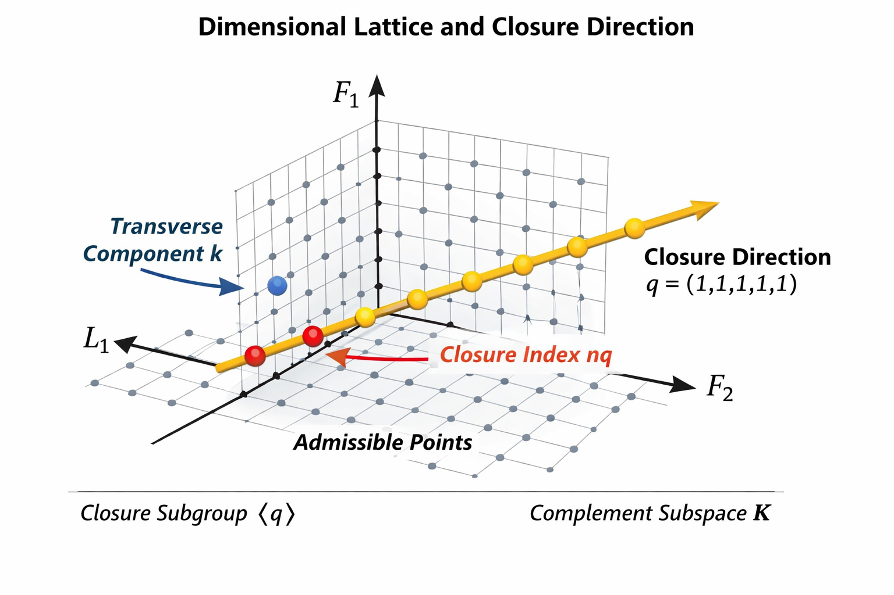

Quantized Dimensional Ledger (QDL): Dimensional Closure as a Structural Admissibility Framework
QDL treats dimensional analysis as a structural admissibility layer: not only “units consistent,” but “structurally allowed.” Physical quantities are represented as integer ledger vectors in a 3L + 2F length–frequency basis, and admissible constructions are tested for closure relative to a distinguished Quantized Dimensional Cell (QDC).
This page summarizes the minimal framework, makes the assumptions explicit, states framework-level falsification boundaries, and gives a formal reading order through the core papers.

A minimal, static example of how a model pipeline can be screened for structural admissibility before calibration and deployment, including an example “Integrity Report.”
This demo illustrates the structural screen, not a full implementation.
Ledger representation in a 3L + 2F basis, a closure-style admissibility predicate, declared transforms, and framework-level output as admissible or excluded.
Use of a QDC target of the form L³F² and the claim that closure can add constraint beyond ordinary dimensional homogeneity.
Gravity/coherence, EFT/SMEFT, metrology, constants, and experiments are treated as downstream uses of the admissibility layer rather than established consequences of the framework alone.
QDL does not replace dynamics, fit data by itself, or constitute evidence for new particles, forces, or effects.
For the cleanest entry path, start with the lattice and closure papers, then move to the SMEFT and metrology applications.
- Integer Lattice Structure of Dimensional Quantities: The Algebraic Structure of the Quantized Dimensional Ledger
- The Quantized Dimensional Ledger: A Lattice Structure for Dimensional Closure in Physical Theories
- Ledger-Closure Constraints on the SMEFT: A Lattice-Theoretic Derivation of Operator Exclusions and Wilson-Coefficient Relations
- The Quantized Dimensional Ledger for Metrology: Dimensional Closure, QMU Ledgers, and the Ontology of Physical Constants
- The Quantized Dimensional Ledger: A Structural Framework for Dimensional Coherence in Physics
The framework page stays definition-first. Application pages and benchmarks should be read after the closure rule is clear.
Definitions (v1.0)
These are the minimal objects used throughout the framework. They are definitions of use, not claims of physical necessity.
- Ledger basis. A 5-component exponent basis ⟨L1,L2,L3,F1,F2⟩ used to encode dimensional quantities as integer vectors.
- Ledger map. A map from a quantity X to an integer vector v(X) = [L1,L2,L3,F1,F2] ∈ ℤ⁵, combined additively under multiplication of quantities.
- QDC target. A designated closure target of the form AQDC ~ L³F².
- Closure predicate. A construction is admissible if its declared ledger sum satisfies a closure rule of the form Σ v(terms) = n · v(QDC) for some integer n, under a declared transform/equivalence set.
- Declared transforms. A specified set of representation changes, reparameterizations, or equivalence operations under which admissibility claims are asserted.
- Framework output. The framework-level output is a classification: admissible or excluded under the declared rules. This is not itself an empirical fit.
Assumptions & commitments
This list states what must be accepted for the framework, as presented here, to function as an admissibility filter.
- Integer exponent encoding. The relevant model class admits a lattice representation of dimensional quantities in ℤ⁵.
- QDC postulate. A QDC target of the form L³F² is adopted as the closure reference.
- Closure adds constraint. The closure predicate is asserted to be stricter than dimensional homogeneity for at least some model classes.
- Declared transforms only. Invariance claims are scoped to declared transforms; undeclared invariances are not assumed.
- Interpretation discipline. “Excluded” means excluded by the admissibility rule, not automatically empirically false.
1. Core dimensional structure
QDL begins with a length–frequency dimensional basis and a conserved Quantized Dimensional Cell. These define the ledger representation and the closure target used by the admissibility rule.
-
3L + 2F length–frequency basis.
The framework uses a three-length, two-frequency exponent space rather than an M–L–T basis. -
Quantized Dimensional Cell (QDC).
The QDC is the designated closure target: AQDC ~ L3F2. -
Ledger vector representation.
X → [L1, L2, L3, F1, F2]Each physical quantity maps to a five-component integer vector, and these vectors combine additively when terms are constructed or compared.
2. Ledger closure as an admissibility rule
QDL replaces “dimensional consistency” as a loose check with a stricter closure predicate: admissible constructions must close onto integer multiples of the QDC under declared transforms.
-
Ledger-closure principle.
Rather than only matching units, QDL asks whether the declared exponent structure closes onto the QDC target. -
What is claimed beyond dimensional homogeneity.
Dimensional homogeneity constrains form. QDL claims an additional structural constraint: closure relative to a conserved target under declared equivalences. -
Framework-level consequence.
If closure holds, it can be used as an admissibility filter on constructions before more detailed dynamical or phenomenological work.
If QDL yields operator exclusions, those should be reported only after reconciliation with canonical operator bases and redundancy handling.
Constant and unit claims should be treated as a structural taxonomy unless a separate operational or metrological constraint is explicitly derived.
Structural positioning (historical analogies)
The comparisons below indicate the kind of role QDL would play if it succeeds as an admissibility layer. They do not imply equal maturity, scope, or historical status.
| Historical precedent | Structural role | QDL analog |
|---|---|---|
| Maxwell | Field-level structural unification | Ledger closure as a unified admissibility grammar |
| Einstein | Constraint structure replaces a looser formulation | Closure filters admissible constructions |
| Dirac | Formal structure constrains allowed content | Lattice organization constrains representable constructions |
| Standard Model | Symmetry restricts interactions | Ledger closure restricts admissible dimensional structure |
These analogies clarify function only.
Falsification (framework-level)
This section states the framework-level failure modes in plain terms. Detailed protocols and benchmark records belong on the Experiments page.
- Closure falsification. If a declared class of empirically adequate models repeatedly violates closure under the declared transform set, and those violations cannot be removed by the declared equivalences, the closure claim fails for that model class.
- Constraint-content falsification. If a supposed QDL-specific exclusion reduces entirely to already-known redundancy elimination, QDL has not added new constraint content for that case.
- Experimental falsification. If a pre-stated QDL-distinct scaling signature is not observed within the stated sensitivity under a pre-registered analysis plan, that specific experimental claim fails.
3. Gravity, coherence, and phenomenology (applications)
These are downstream applications of the admissibility framework, not part of the minimal definition itself.
-
Gravity and minimum-length structure.
Explores whether closure and coherence constraints can motivate additional structure in gravity-related constructions. -
Unified field-content explorations.
Applies the ledger framework across Standard Model and gravity-related sectors under a shared closure language. -
Coherent ledger fields.
Connects ledger geometry to proposed phenomenology in torsion balances, NV centers, cavity scaling, and metamaterials.
4. EFT / SMEFT as ledger lattices (applications)
Expressing EFT and SMEFT operator content in ledger form yields an integer lattice. QDL proposes closure as an additional constraint on operator organization and admissibility.
-
Ledger lattice for EFT operators.
Operator content becomes a discrete lattice in 3L + 2F space, enabling structural organization and possible exclusions. -
SMEFT exclusions and relations.
Closure-derived exclusions and coefficient relations should be interpreted only after explicit comparison with canonical SMEFT baselines.Reference: 10.5281/zenodo.17780443
5. Metrology, constants, and validation (applications)
Metrology and constants work provides a structured language for dimensional audits and measurement-chain reasoning, while validation work ties the framework to declared benchmarks and null tests.
-
QMU ledgers and dimensional audits.
Structured dimensional audits for units, constants, and measurement chains.Reference: 10.5281/zenodo.17619526 -
Ontology of constants.
Treats constants as a structural taxonomy unless a separate operational constraint is derived. -
Validation roadmap.
Torsion balances, NV centers, cavities, and metamaterials are proposed as declared tests of whether closure adds reproducible structure beyond conventional bookkeeping.
6. Quick-start summary
If you only take one thing from this page: QDL is a closure-based admissibility framework intended to turn dimensional reasoning into a more explicit structural filter.
- Foundational lattice paper: Integer Lattice Structure of Dimensional Quantities
- Formal closure paper: A Lattice Structure for Dimensional Closure in Physical Theories
- SMEFT application: Ledger-Closure Constraints on the SMEFT
- Metrology application: The Quantized Dimensional Ledger for Metrology
- Book overview: The Quantized Dimensional Ledger: A Structural Framework for Dimensional Coherence in Physics
- Browse the full library: Publications page or Zenodo community.
- Validation-first option: start at Experiments for benchmarks and declared tests, then return here to interpret the admissibility layer.